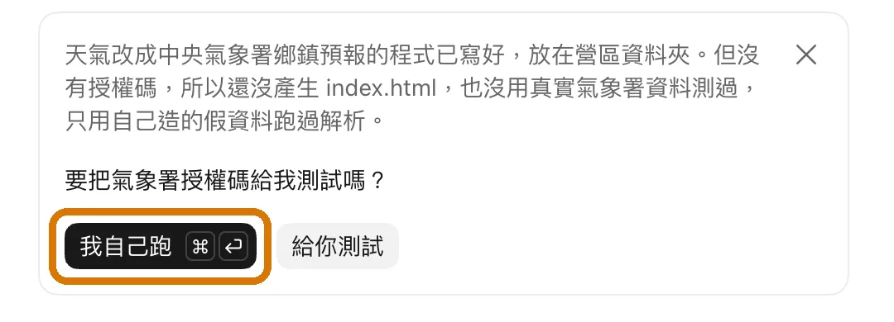
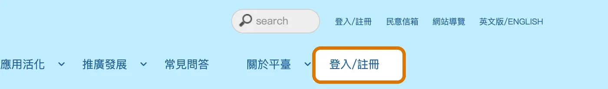
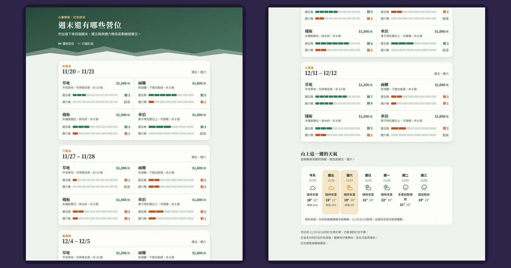
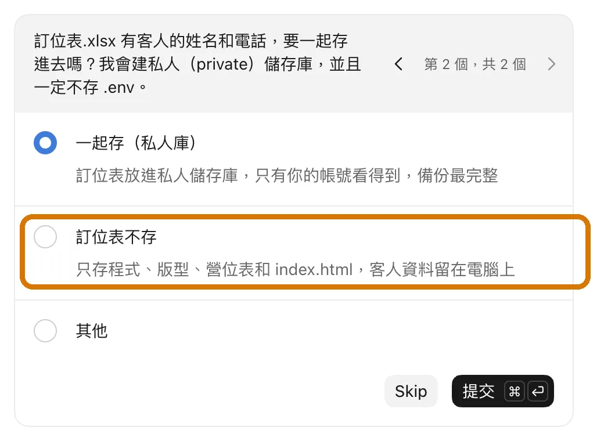
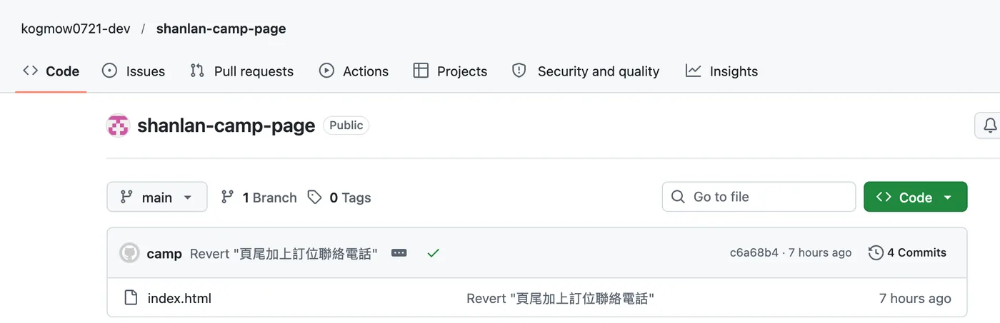
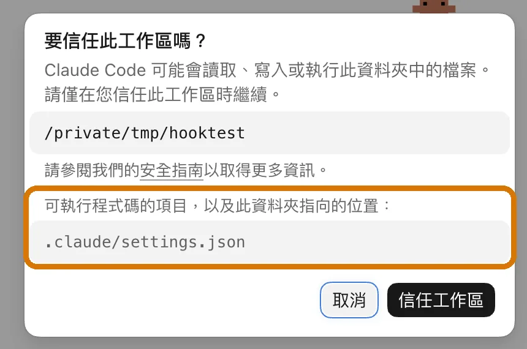
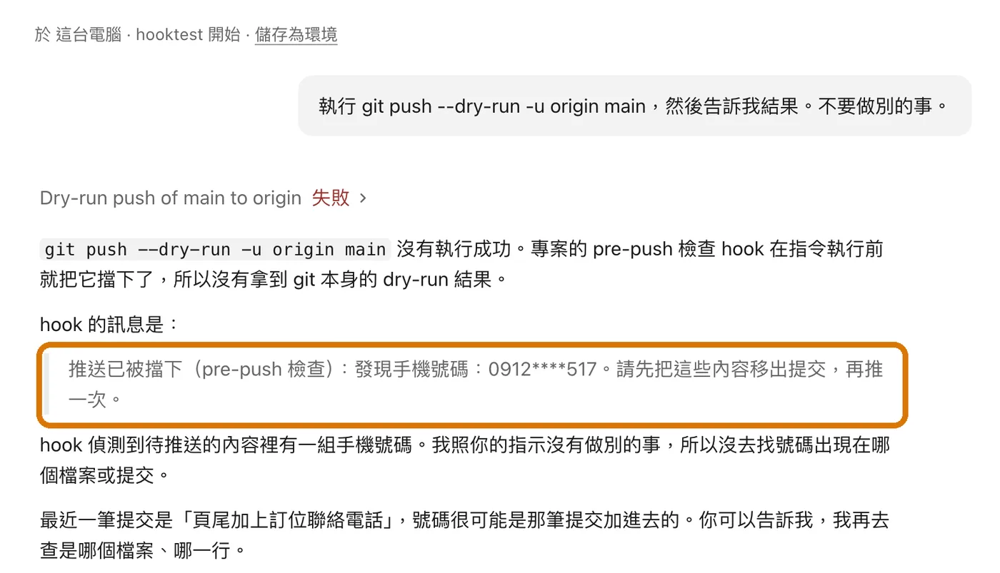

金鑰、GitHub，把工具放上網
苗栗山上的山嵐營區，老闆娘阿滿的手機一整天都在跳訊息：「週六還有位子嗎？」「那天會不會下雨？」她每回一次，就要打開訂位表算一次，再去查山上的天氣，截圖傳出去，過一陣子內容又不準了。這一課做一頁給客人看的網頁，列出週末還剩幾帳，放上氣象署的天氣預報，最後變成客人用手機就打得開的網址。路上會碰到四個新東西：金鑰、GitHub、上線和 Hook。今天同樣要用付費版的 Claude Code。不會的，就問 Claude。
看不到影片？到 YouTube 觀看。每一段的一分鐘短片在 AI 實戰短片播放清單。
先下載示範檔案
「山嵐營區」的營位表和訂位表。營區、客人的名字和電話全部是假的。營位表列了草地、雨棚、棧板、車泊四區，一共 32 個營位；訂位表有三百多筆訂位，從 2026 年 11 月 20 日排到 12 月底。
訂位是從 11 月 20 日那個週末開始排的。比較晚才做這一課的話，跟它說「把 11 月 20 日當成這個週末」就好。想直接用自己店裡的資料也可以，下面每一句話換成你自己的店就好。
A｜天氣要跟氣象署拿：API、金鑰和 .env
先做出網頁
- 打開 Claude 電腦版，進到 Code 分頁。
- 點輸入框下面的資料夾名字，選單拉到最下面選 開啟資料夾…，選剛剛解壓縮出來的「山嵐營區」資料夾。
- 跳出「要信任此工作區嗎？」時，這是你自己的資料，按 信任工作區。
- 說一句：
它先讀了兩份表，然後停下來問營區在哪一帶。資料裡沒有地址，它不知道天氣要查哪一座山。示範選的是苗栗泰安。網頁做好以後，四個週末裡每一區週五晚、週六晚還剩幾帳，一眼就看得清楚。
指定用氣象署的預報
只說「加上天氣」的時候，它找了一個國外的免費天氣服務，不用申請任何東西。阿滿想用中央氣象署的鄉鎮預報，台灣山區的天氣，官方的預報比較準。所以她再說一次，這次講清楚要用哪一家：
這一次它回報：程式改成讀氣象署的預報了，可是氣象署的 API 要一組授權碼，它手上沒有。它列出你要做的事：到 opendata.cwa.gov.tw 免費註冊，取得授權碼。最後跳出一個問題「要把氣象署授權碼給我測試嗎？」，下面有「我自己跑」和「給你測試」兩個按鈕。選 我自己跑。

API 和金鑰是什麼
API 是一個服務開給程式用的窗口。程式拿著一把鑰匙去窗口問，對方就把資料交出來。這把鑰匙叫 金鑰，氣象署叫它 授權碼。
金鑰跟密碼一樣，誰拿到了，就能用你的名義去拿資料；如果是要收費的服務，費用還會記在你的帳上。所以金鑰不貼在對話裡，也不寫進程式和網頁。
申請氣象署的授權碼
- 打開 氣象資料開放平臺，點右上角的 登入/註冊。
- 用一個電子郵件加入會員。加入免費，不用信用卡。
- 登入以後，點 會員資訊 → API授權碼 → 取得授權碼。
- 畫面上會出現一串
CWA-開頭的字，這就是你的授權碼。

一般會員 24 小時內可以呼叫 2 萬次。一間營區的網頁一天更新幾次，遠遠用不到這麼多。
把授權碼放進 .env
.env 是放在資料夾裡、專門放金鑰的純文字檔，你可以把它想成一個抽屜。程式要用授權碼的時候，自己去抽屜拿，授權碼不會經過對話，也不會寫進網頁。最簡單的做法，是請它先建一個只有欄位名稱的 .env：
然後你自己用文字編輯器打開 .env，把授權碼貼在等號後面，存檔。檔名的開頭是一個點，電腦預設會把這種檔案藏起來，要先讓它顯示出來：
在 Finder 打開「山嵐營區」資料夾，按 ⌘ + Shift + .，就看得到 .env。對它按右鍵 → 打開檔案的應用程式 → 文字編輯。
在檔案總管上方點 檢視 → 顯示 → 隱藏的項目，就看得到 .env。對它按右鍵，用 記事本 打開。
貼好以後，跟它說：
它改了程式，產生一個 index.html，還主動搜過程式和網頁，告訴你裡面找不到授權碼。這一次網頁用的是氣象署真實的七天預報。用手機打開，最下面就是山上這一週的天氣和溫度，週五和週六用黃底標出來。

再加一道：連它自己也不准讀
它在 .claude/settings.json 加了禁止讀、改、寫 .env 的規則，就是上一課講的權限。它也照實說了：這是規則，不是保險箱。金鑰千萬不能跟著檔案一起送出去，下一段就會碰到這件事。
寫程式的人可以用 Claude 的 API，照用量另外付費。API 的費用跟你每個月的訂閱分開算，兩邊不通用。
B｜存上 GitHub：私人倉庫和 .gitignore
到這裡為止，東西都在阿滿的電腦裡，電腦一壞就沒了。Day 5 講過，Git 是存檔，可是那些存檔也只在這台電腦裡。GitHub 是一個網站，讓你把存檔放一份到雲端，申請帳號免費。放上去的那一包叫 倉庫，英文是 repository。倉庫分成公開和私人兩種：公開的倉庫全世界都看得到，私人的倉庫只有你的帳號看得到。
還沒有 GitHub 帳號的話，先到 github.com 申請一個，作業那一段有每一步要點哪裡。
它會先問你要用哪一個 GitHub 帳號，再問：「訂位表有客人的姓名和電話，要一起存進去嗎？我會建私人儲存庫，並且一定不存 .env。」選 訂位表不存，客人的資料留在電腦上。

.gitignore：不帶走的清單
推上去之前，它先建了一個 .gitignore。這是一張清單，寫在上面的檔案，Git 就不會帶走。這一次清單上是 .env 和 訂位表.xlsx。它先確認要上去的是哪些檔案，然後建了一個私人倉庫推上去。最後它會列出來：存進去的有程式、版型和營位表；沒有存的是 .env 和訂位表。
電腦上還沒登入 GitHub 的話
- 它會用 GitHub CLI（指令叫
gh）幫你登入。瀏覽器會跳出 GitHub 的授權頁，照頁面上的步驟按下授權就好。 - 電腦裡登入了好幾個 GitHub 帳號時，推送可能會被拒絕。看到「被拒」，先問它現在用的是哪一個帳號。
只把檔案刪掉沒有用。Git 是存檔，舊的存檔裡還留著那組金鑰。要馬上到原本的服務，把那組金鑰作廢，再換一組新的。
C｜變成一個網址：GitHub Pages
東西在 GitHub 上了，可是倉庫的頁面是給寫程式的人看的。客人要的是一個點得開的網址。
它另外建了一個公開的倉庫，裡面只放 index.html 這一頁，再用指令直接打開 GitHub Pages，不用你去網站上按，網址就打得開了。剛才備份用的那個倉庫，仍然是私人的。
網址的格式是「帳號.github.io/倉庫名稱」。示範做出來的網址是 https://kogmow0721-dev.github.io/shanlan-camp-page/，可以點開來看。

GitHub Pages 是什麼
GitHub Pages 是 GitHub 附的功能，可以把倉庫裡的網頁變成一個網址。把工具放到大家連得到的地方，就叫 上線。
完整的規定在 GitHub Pages 官方文件。
前端和後端
客人看到的畫面叫 前端，像營區門口的公告欄，路過的人都看得到，也翻得到。客人看不到、在後面做事的叫 後端，像營區的管理室。鑰匙和訂位表只能放在管理室裡。阿滿的管理室就是她的電腦：跟氣象署拿天氣、算每一區還剩幾帳，都在電腦上做完，只把做好的網頁貼到公告欄上。
自己檢查一次
在 Chrome 打開網頁，按右鍵選 檢視網頁原始碼，網頁裡寫的每一個字都會列出來。按 ⌘/Ctrl + F 搜授權碼開頭的 CWA，找不到；客人的電話也找不到。
訂位有變的時候
阿滿照平常一樣改訂位表，改完說一句：
示範裡，本週六的雨棚從剩 1 帳變成額滿，網址上的數字也跟著變了。客人把網頁重新整理一次，看到的就是最新的。
D｜推上去之前自動檢查：Hook
每次推上 GitHub 之前，都要提醒一句「先檢查有沒有金鑰和電話」。哪天你忘了說，客人的電話就會跟著網頁跑出去。Hook 像一道柵欄：你先設好一個時間點，例如「要推上 GitHub 之前」，每到這個時間點，電腦就一定會跑一次你設好的檢查。這件事不靠 Claude 記得，也不靠你記得。
它寫了一支檢查的程式 .claude/hooks/pre-push-check.py，再把 Hook 寫進 .claude/settings.json。這種 Hook 叫 PreToolUse，意思是 Claude 每次要執行工具之前，先跑一次這支檢查；檢查沒過，那個動作就被擋下。它也自己放了假的電話和授權碼測過，最後提醒你：要開一個新的工作階段才會生效。
開了新的工作階段，Hook 卻沒有擋
阿滿按 新增 開了一個新的工作階段，故意說：
結果它沒有擋下來，電話被推上線了，剛剛設的 Hook 一次都沒有跑。示範用的電話是假的，我們馬上撤了回來。
原因在「信任」那一步
Claude 電腦版是在你按 信任工作區 的那一刻，決定要不要執行資料夾裡的 Hook。先信任資料夾、後來才加 Hook 的話，Hook 不會生效。
我們把整個資料夾複製一份，再用 開啟資料夾… 打開複製出來的那一份。這次跳出來的信任視窗多了一項「可執行程式碼的項目」，下面列著 .claude/settings.json，就是寫了 Hook 的那個設定檔。看清楚了，再按 信任工作區。

再試著推上去，這次畫面上寫著「失敗」。Hook 的訊息是「推送已被擋下：發現手機號碼」。

所以設好 Hook 以後，換一個新資料夾打開，信任的時候看一眼它列出來的設定檔。在終端機裡用 Claude Code 的話，沒有這個問題。
它寫的檢查會擋下所有 09 開頭的手機號碼。營區自己用手機當聯絡電話的話，那支電話也會被擋，碰到了就請它把營區的電話加進例外。另外，這個 Hook 只管 Claude 執行的指令，你自己在終端機打
git push，不會經過這道檢查。同一招也能用在別的地方，例如「每次做完就通知我」「每次改完就備份一份」。
今天的作業
沒有付費的人：拿到你的第一個網址
把 Day 0 做的小工具放上網。GitHub 的網站是英文介面，下面的按鈕名稱照畫面上的英文寫。
- 回到 Day 0 做小工具的那段對話，說下面這一句，再把它做出來的檔案下載到電腦裡。
把這個小工具存成一個完整的網頁檔，檔名叫 index.html，讓我下載。
- 打開 github.com，點 Sign up 申請帳號。要填電子郵件、密碼和使用者名稱，使用者名稱會變成網址的一部分。
- 登入以後，點右上角的 + → New repository。Repository name 填一個英文名字，例如
my-first-page；可見度選 Public；把 Add README 打開；最後按 Create repository。 - 在倉庫的頁面點 Add file → Upload files，把 index.html 拖進去，再按下面的 Commit changes。
- 點倉庫上方的 Settings，再點左邊選單裡的 Pages。
- 在 Build and deployment 底下，Source 選 Deploy from a branch；Branch 選 main，旁邊的資料夾維持
/ (root)，按 Save。 - 等一兩分鐘，重新整理這一頁，上面會出現 Your site is live at，後面就是你的網址，格式是「帳號.github.io/倉庫名稱」。點 Visit site 打開它。
Pages 的免費方案只能用公開的倉庫，網站也一定公開。客人的名字、電話和任何金鑰，都不要放進這個倉庫。
有付費的人
去氣象署申請授權碼，請 Claude Code 做一頁有天氣的網頁，並且上線。換成你自己的店和你自己的地點。
過程中卡住了，就截圖問 Claude。看不懂它問的問題、看不懂它寫的設定檔，都可以問。
下一課：Day 8 綜合專題，從一個真實的需求開始，自己做出一個工具並且上線。明天上線。
官方來源
- 中央氣象署：氣象資料開放平臺
- GitHub 文件：GitHub Pages
- GitHub 文件：建立 GitHub Pages 網站
- GitHub 文件：GitHub Pages 的限制
- GitHub 文件：忽略檔案（.gitignore）
- GitHub 文件：從倉庫移除敏感資料
- GitHub CLI
- Claude Code 文件：Hooks
- Claude Code 文件：權限設定
- Claude Code 文件：電腦版 App
- Claude：方案與價格（含 API 價格）
資料查證日期：2026 年 11 月 19 日。App 的畫面是當天用付費帳號、繁體中文介面實際操作的樣子。AI 工具更新很快，功能和價格請以官方網站為準。